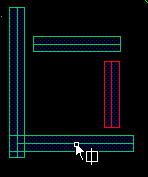
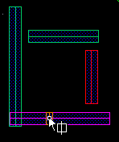
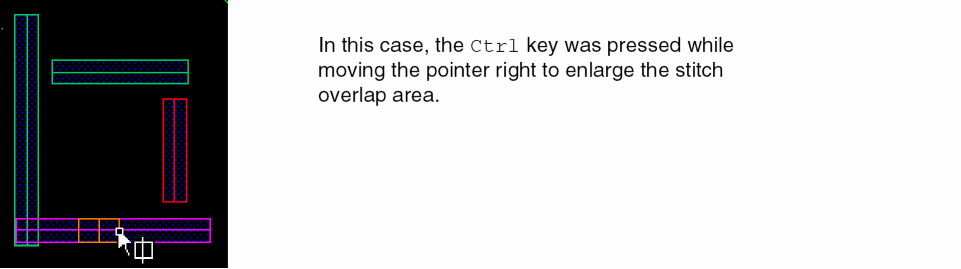
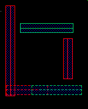

Creating Stitches
To create two stitched shapes from one shape,
- Enable stitching, as described in Stitch and UnStitch.
-
In the Multiple Patterning toolbar, click the Stitch icon.
The command mode becomesstitchand the Stitch icon appears next to the pointer in the workspace.
 -
Click the shape to be stitched.
The shape is highlighted in gray and the stitch overlap area is shown.
 - Move the cursor across the shape to the location for the stitch.
-
(Optional) Enlarge or shrink the stitch overlap area by pressing the
Ctrlkey while moving the pointer across the shape.
 -
Click to make the stitch.
The shape is broken into two shapes of opposite colors, forming a different color group, with the desired overlap.

Related Topics
Return to top